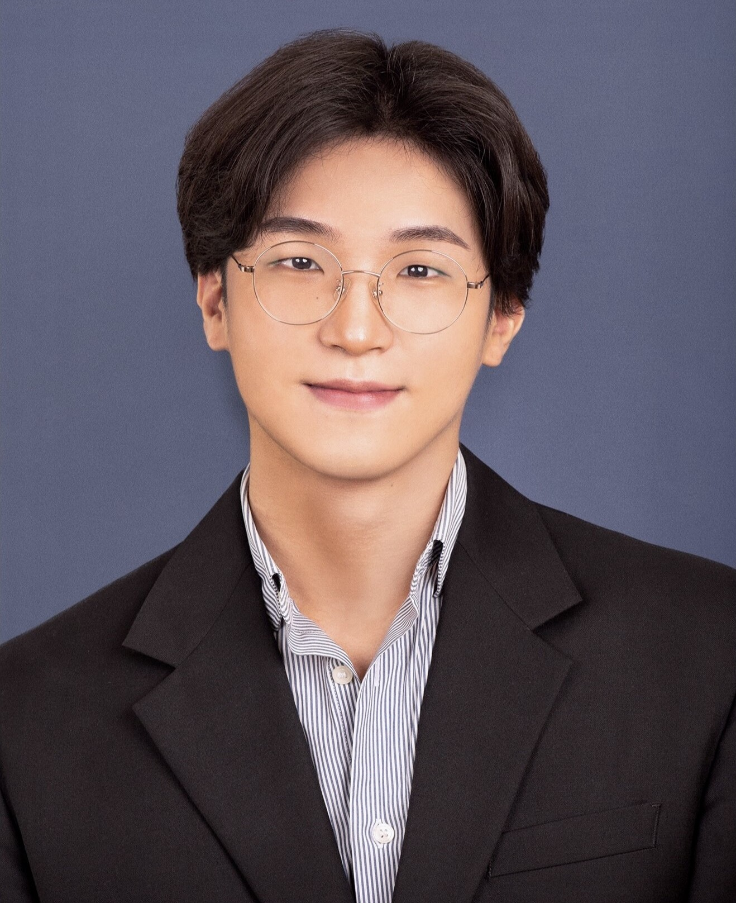

Postdoctoral Research Associate / Human Factors Researcher
Jiwon Kim, Ph.D.
Jiwon Kim is a Postdoctoral Research Associate in the Communication and Cognition Lab at Purdue University, where he works with Dr. Torsten Reimer. He received his PhD in Industrial Engineering, with a minor in Statistics, from Iowa State University in 2026 under the supervision of Dr. Michael Dorneich. His research focuses on human factors, human-AI teaming, and adaptive decision making. His recent work has been published in Human Factors, Ergonomics, and IEEE Transactions on Human-Machine Systems. He founded the HFES Student Chapter at Iowa State University and served as its president from 2024 to 2026. He received the Federal Aviation Administration’s PEGASAS Outstanding Student Researcher Award in 2024, the HFES Student Member with Honors Award in 2025, and the Iowa State University Research Excellence Award in 2025.
Contact
Get in Touch
Email is the best way to reach me. You can also find my work on Google Scholar, LinkedIn, or ORCID.
Purdue University
West Lafayette, IN 47907
Email: kim5855 at purdue.edu